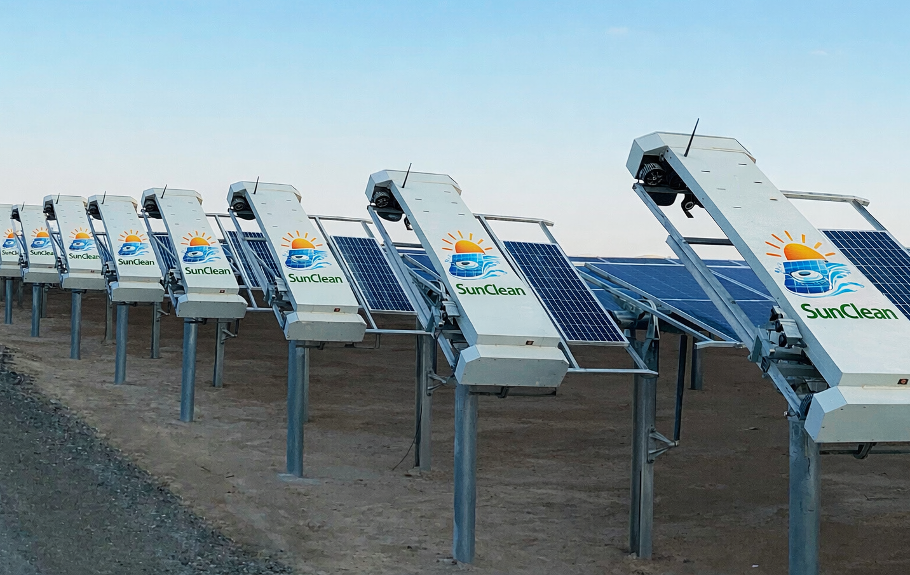

SunClean Tech cleaning systems are engineered to deliver reliable, repeatable, and scalable panel cleaning performance in dust-intensive and operationally demanding solar environments.
At SunClean Tech, we do not see cleaning as a simple maintenance activity. We treat it as a performance-critical engineering function that directly impacts solar energy output, O&M efficiency, and long-term plant profitability.
That is why our robotic systems are designed around actual plant conditions— not lab assumptions.
Our focus is to create machines that are:

Brush and contact systems are designed to clean effectively while protecting panel surfaces and mounting structures.
Depending on the model, SunClean systems support low-water or dry cleaning operations for water-sensitive environments.
Our systems are built for controlled and repeatable cleaning motion, reducing inconsistency compared to manual methods.
Built for outdoor operation with robust movement systems suitable for large repetitive cleaning cycles.
SunClean robotic cleaning follows a structured operational workflow designed to reduce downtime and increase repeatability.
The system is positioned or mounted according to the plant layout and product type being used.
The robot moves across the solar panel surface using engineered motion control and cleaning contact mechanisms.
Dust, loose particles, and surface contaminants are removed to restore panel exposure and maintain output efficiency.
Systems are designed for repeated operational use, enabling regular cleaning schedules across the plant.

Not every solar plant requires the same level of automation. That is why SunClean Tech offers a range of systems designed to match different operational scales and budgets.
This allows plant owners and operators to adopt automation at the right stage, without overcomplicating implementation.
Solar assets are growing larger, more automated, and more performance-sensitive. Cleaning technology must evolve with them.
SunClean Tech is building systems not just for today's cleaning needs, but for the future of intelligent solar operations.
Our technology roadmap is built around performance, automation, sustainability, and practical field deployment.